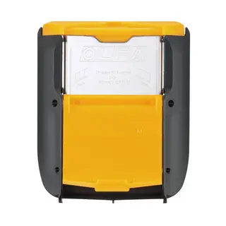
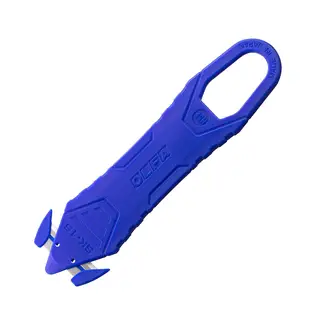
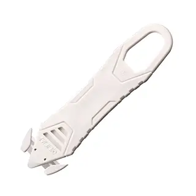
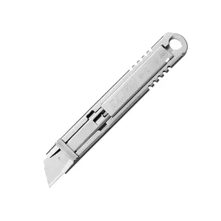
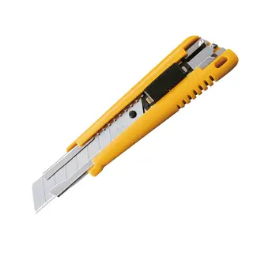
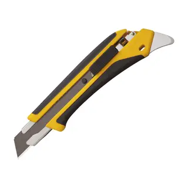

 OlfaContenedor para Fragmentar Hojas Usadas para Cinturón DC-5.Código DC-5 CotizarVer detalle
 OlfaCuchillo de Máxima Seguridad Desechable Azul 10 un.Código SK-15/L CotizarVer detalle
 OlfaCuchillo de Máxima Seguridad Desechable Blanco 10 un.Código SK-15/W CotizarVer detalle
 OlfaCuchillo de Seguridad Auto-Retráctil Acero Inox SK-12Código SK-12 CotizarVer detalle
 OlfaCuchillo Industrial EXL de 18 mm. con Seguro AutomáticoCódigo EXL CotizarVer detalle
 OlfaCuchillo Industrial L5-AL de 18 mm. Seguro AutomáticoCódigo L5-AL CotizarVer detalle